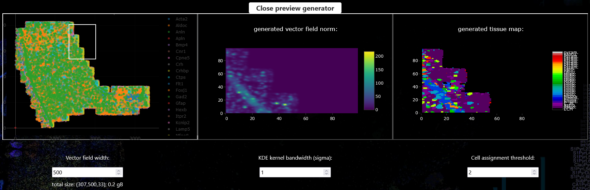
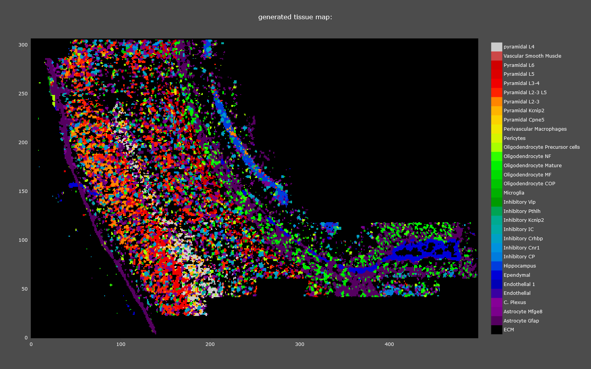

Usage
Open SSAM-lite
SSAM-lite will be opened (and executed) in your Web Browser. For a list of compatible Browsers read Supported Browsers. Connecting to SSAM-lite depends on whether you want to use the solo or server version. However, the usage afterwards will be (almost) identical.
SSAM-lite-solo
SSAM-lite-solo runs locally on your computer. It is executed by your browser and to open it you only need to navigate to the unzipped SSAM-lite directory and double-click the index.html and it will start in your default web browser.
SSAM-lite-server
To connect to SSAM-lite-server, you will need to to open your favourite web browser (not IE) and type the correct IP address and port in the form {ip}:{port} (e.g. 127.0.0.1:5000) into the address bar. However, the IP and port depends on your local setup. Talk to your responsible SSAM-lite coordinator.
Data
The data will be uploaded in the Data Center section of the tool. By clicking the “Coordinates” or “Signatures” button and selecting the correct files. To be able to use SSAM-lite you need to prepare your data in csv format. Two input files are required and must be structured as follows:
- mRNA Coordinates
This file needs to be of the form gene, x-coordinate, y-coordinate. The name of the headers are irrelevant, however their order needs to be kept. Negative coordinates are possible and the units do not matter. However, their magnitude might have an influence on proper parameter values later on.
gene,
x,
y
gene A,
0.5,
1.3
gene A,
1.1,
2.1
gene B,
0.4,
0.5
- Gene Signatures
This file should be a matrix of cell types by genes. The first column and row contains the names of cell types and genes, respectively. All the other cell values are gene scores … TODO how to define this … This will later be used to assign each pixel to a cell type (or leave them unclassified) based on the kernel density estimation.
,
gene A,
gene B,
gene C
cell type A,
0.5,
-0.5,
1.3
cell type B,
-0.2,
1.1,
2.1
cell type C,
0.3,
0.4,
0.5
Note
The name of the genes need not be correct as there is no database used in the background. But remember that the gene names from the coordinates and the signatures need to be the same (or more specifically the two sets of names must be partially overlapping).
Once both files are loaded you can proceed with setting the parameters for your analysis.
Parameters
For a more detailed explanation of the SSAM framework we would refer the user to the SSAM publication, however we will briefly describe the purpose and effect of the parameters that can be set by the user to obtain optimal results.
- Vector field width
The vector field width defines the horizontal pixel count of the output images. This is necessary as the kernel density estimation (KDE) will be projected onto discrete locations (the pixels).
A higher value will result in higher resolution but also in increased processing time and memory as well as size of the output images.
- KDE kernel bandwidth (sigma)
SSAM-lite uses a Gaussian kernel and the kernel bandwidth defines the “range” of integration of data points (mRNA spots) for the KDE.
A higher value will result in an increased smoothing of the mRNA density estimation.
- Cell assignment threshold
This threshold is used to decide whether a pixel in the KDE projection belongs to a cell or not.
As help to pick an optimal value you can check the KDE estimate (middle plot in the parameter preview) to find the intensity that should serve as cutoff point.
Each of the parameters can be set in their respective field and applied by hitting Enter. For a more intuitive parameter selection you can open a preview by clicking “Use preview generator for parameter search”. This will display the results of a subset of your data with the currently set parameters and lets you interactively explore and tune your parameter set.
{kind=link}
Once you are happy with your choice you can proceed with the actual analysis.
Analysis
To run the analysis, you start by clicking “Run Kernel Density Estimation” below “Step 1: Kernel Density Estimation” and wait until processing is finished. Once it finished, the KDE estimates will be displayed in a plot (see example below). This step is the computationally most expensive and might tak a few minutes.
Note
If you are using SSAM-lite-solo your browser might warn you that it is being slowed down by the current site. This is normal due to the heavy computation running in the background and can be ignored.
{kind=link}
Next, given the KDE estimates you can start inferring cell types. Scroll down to “Step 2: Cell Assignments” and click on “Infer Cell Types”. The inferred cell types will be displayed in a new plot.
{kind=link}
If you are not satisfied with the results you can go back to the parameters section and refine those before rerunning the analysis.
Save results
All plots are produced with Plotly and can be downloaded by hovering over the plot which triggers a legend to appear in the upper right corner, now click the camera icon which lets you download the current plot as png file.